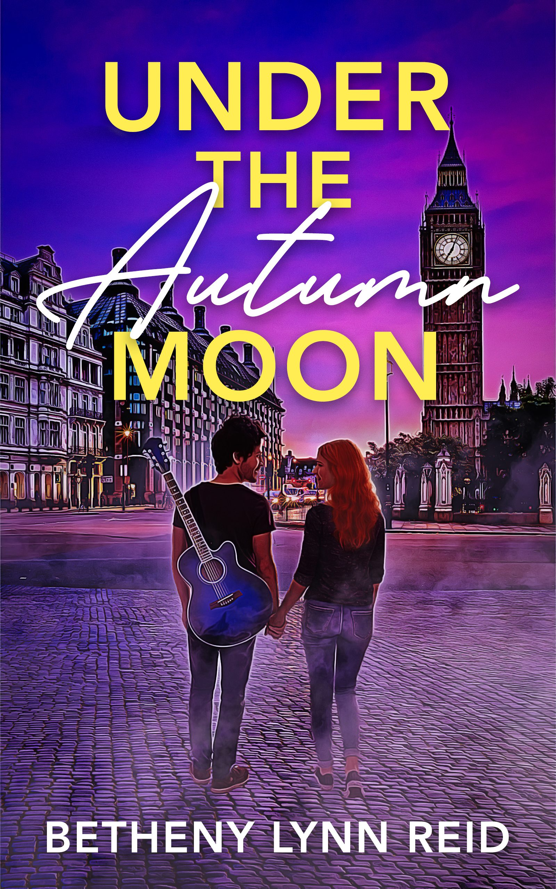
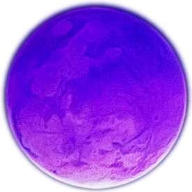
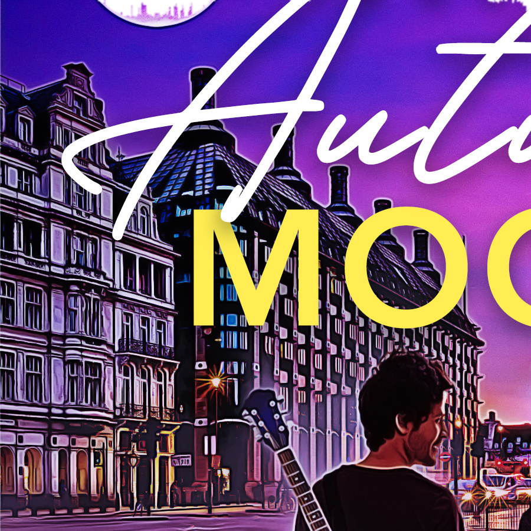
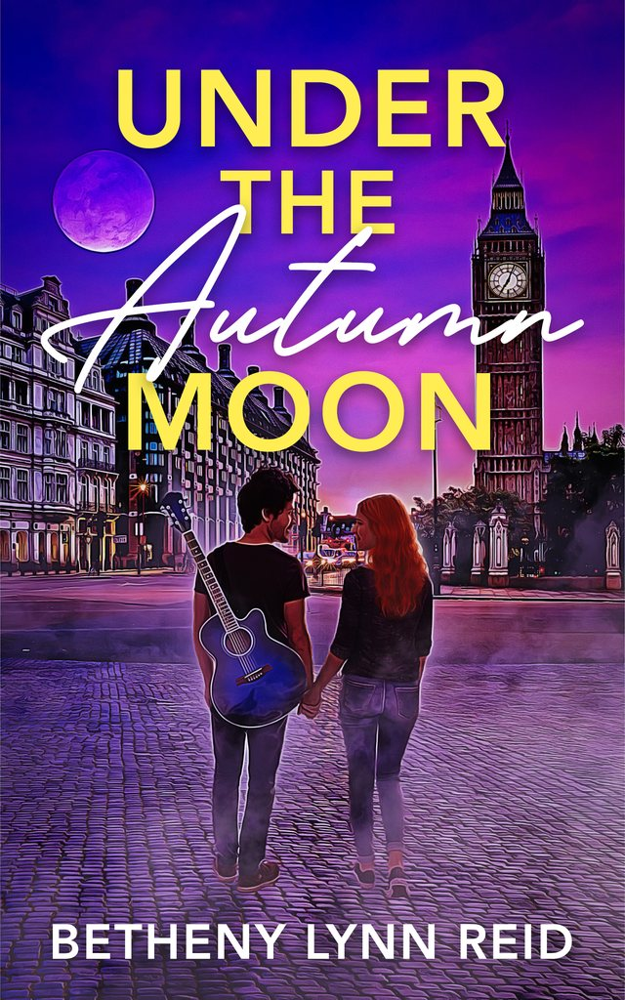

Lexi and Paddy
Lexi Maxwell writes bestsellers, and nobody knows her face. Paddy May is the guitarist she had a crush on as a teenager. They meet in a quiet London bookstore, where he is holding her latest book and offers his left hand to shake, because she doesn't have a right.
A morning coffee turns into a walk that lasts for days, and a dance under the moon. To stay together, they will have to get through fame, grief and the ghosts of the past.

The poems
I must touch the bark of a tree or the blade of grass
From "Each Day", April 2026- The Sun magazinePublished
- Big Bend Literary MagazinePublished
- Inner Moonlight, The Wild Detectives, DallasReadings
Betheny
Betheny Lynn Reid is an award-winning poet, essayist and author of short fiction. She spent years in communications, public affairs and higher education, and now writes the stories her characters ask her to tell. She rides her bike everywhere, hikes, travels, and lives with her husband and two cats.